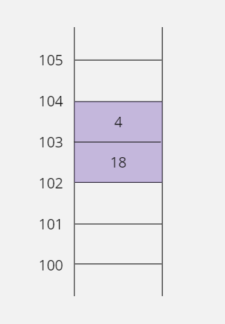

13. 포인터
13-1. 운영체제의 메모리 관리 방식
운영체제와 프로그래밍
- 지금까지는 변수를 사용하여 메모리에 데이터를 저장하거나 읽었다.
- 이렇게 C 언어 소스 코드에서 사용한 변수들은 컴파일 작업 후 기계어로 변경되면 모두 메모리 주소로 바뀌어서 적용된다.

- 결국 기계어에서는 변수 이름보다 변수가 위치한 메모리의 주소가 훨씬 중요하다.
- 즉 변수 이름을 사용하지 않더라도 변수의 주소만 알고 있다면 변수 값을 읽거나 바꿀 수 있다는 뜻이다.
- 그런데 컴퓨터 시스템의 메모리는 운영체제가 관리하고 있다.
- 따라서 메모리 주소의 사용법을 배우기 전에 운영체제가 메모리를 어떻게 관리하는지를 먼저 알아야 한다.
- 운영체제(Operating System)는 컴퓨터 시스템을 효과적으로 관리해 주고 시스템이 가지고 있는 자원을 사용자 또는 프로그램이 잘 이용할 수 있도록 서비스해 주는 소프트웨어이다.
- 예를 들어 윈도우, 리눅스, 유닉스와 같은 소프트웨어가 운영체제이다.
32비트 운영체제와 64비트 운영체제
- 64비트 운영체제가 보급됨에 따라 운영체제에서 실행되는 프로그램도 32비트 프로그램과 64비트 프로그램으로 나누어서 개발할 수 있다.
- 실제로 개발 현장에서는 특별한 경우가 아니라면 32비트 방식으로 개발하는 경우가 많다.
- 32비트 방식으로 개발해도 32비트 운영체제 또는 64비트 운영체제에서 모두 동작하기 때문이다.
64비트 운영체제의 장단점
- 운영체제가 64비트를 지원하는 건 많은 이점이 있다.
- 동시 처리 능력이나 메모리의 확장성 같은 부분에서는 선택의 문제가 아니라 반드시 64비트로 사용해야 하는 경우도 있다.
- 예를 들어 32비트 운영체제는 우리가 메모리라고 부르는 RAM을 4GB(기가바이트, 230)밖에 사용하지 못하지만 64비트 운영체제에서는 16EB(엑사바이트, 260)까지 사용할 수 있다.
- 따라서 자신의 시스템이 RAM을 4GB이상 사용한다면 64비트 운영체제를 설치해야 메모리를 100% 다 사용할 수 있는 것이다.
- 하지만 64비트 운영체제가 장점만 있는 것은 아니다.
- 64비트 운영체제는 데이터의 기본 처리 단위가 64비트라는 뜻이기 때문에 기본적으로 메모리 사용량이 많다.
- '운영체제나 프로그램이 몇 비트인가?'에 대해 이야기한 이유는 이 방식에 따라서 데이터를 처리하는 기본 단위가 달라지기 때문이다.
- 4장에서 자료형을 설명할 때
int형을 4바이트라고 한 이유는 32비트 운영체제를 기준으로 설명했기 때문이다. - 예를 들어 C 언어의
int형 개념은 운영체제의 비트 수와 일치하기 때문에 32비트 운영체제에서는int형이 32비트이다.
메모리 주소 지정 방식
- 운영체제는 메모리 주소를 1바이트 단위로 관리한다.
- 운영체제마다 관리하는 방식에 차이가 있지만 32비트 윈도우 운영체제의 경우에 0~4,294,967,295번지까지 1바이트 단위로 주소가 매겨져 있다.
- 번지수 4,294,967,295는 232-1을 계산한 결과이다.
- 운영체제가 32비트이고 시작 주소가 1이 아니고 0이기 때문이다.
- 메모리를 사용하려면 반드시 사용할 주소를 지정해야 하고 메모리가 1바이트 단위로만 사용되는 것은 아니기 때문에 프로그래머가 메모리를 사용할 때 한 번에 읽거나 저장할 크기를 명시해야 한다.
- 예를 들어 100번지, 101번지 이렇게 두 개 바이트를 사용하고 싶다면 '100번지부터 2바이트 크기만큼 메모리를 사용하겠다'라는 형식으로 표기해 주어야 한다.
직접 주소 지정 방식
- 직접 주소 지정 방식은 메모리를 사용할 때 프로그래머가 사용할 메모리 주소를 직접 적는 방식이다.
- 예를 들어 '102번지에 1042라는 값을 2바이트 크기로 저장하겠다'라고 이야기하는 것이 직접 주소 지정 방식이다.
- 102번지라는 주소를 직접적으로 표기했기 때문이다.

- 메모리를 사다리 모양으로 그려서 하나씩 검증해 보는 것이 개념을 이해하는 데 도움이 된다.
- 102번지에 1042 값이 대입되었는데 이 값이 2바이트에 걸쳐서 표현되어 있다.
- 그런데 위 그림은 단순화하여 그린 것이라 실제 메모리의 형태는 아니다.
- 실제 메모리에서 10진수 1042는 두 개의 바이트에 각각 4와 18로 나뉘어 저장되기 때문에 다음과 같이 그림을 그려야 한다.

1042가 왜 4와 18로 나누어질까?
- 1042값이 왜 4와 18로 나뉘어서 저장되는지 이해하려면 1042값을 2진수 값으로 바꿔 보면 된다.
- 2진수 한 자리를 저장하기 위해서는 1비트가 필요하기 때문에 2바이트(16비트)에 맞도록 총 16자리의 2진수로 표시하면 다음과 같다.
0000 0100 0001 0010 // 1024 (4) (18)
- 결국 1042 값은 8비트에 저장할 수 없기 때문에 두 개의 8비트에 4와 18로 나뉘어 저장되는 것이다.
- 그런데 위의 그림에서 8비트씩 메모리에 옮길 때 102번지에 18, 103번지에 4가 대입되어 있다.
- 숫자를 적을 때 큰 숫자부터 적는 게 일반적이라서 102번지에 4가 저장되는 게 맞다고 생각할 수도 있지만, 이 그림은 윈도우 운영체제를 기준으로 그린 것이다.
- 윈도우 운영체제는 리틀 엔디언이라는 바이트 정렬을 사용하여 숫자를 표현하기 때문에 우리가 생각하는 것과 반대 방향으로 숫자가 배열된다.
16진법으로 메모리 형태 표시하기
- 우리가 자주 쓰는 숫자는 대부분 10진수이다.
- 컴퓨터 내부에서는 0과 1, 즉 2진수로 정보를 처리한다.
- 파일을 압축하는 연산이나 동영상 처리, 심지어 전화 통화까지도 모두 비트 단위인 2진수 패턴으로 작업할 수 있다.
- 그런데 C 언어에서는 2진수를 직접 사용하는 방법을 제공하지 않는다.
- 따라서 C 언어로 프로그래밍할 때는 2진수에 가장 가까운 표현법인 16진수를 자주 사용한다.
- 16진법은 한 자릿수를 표현하는 데 16개의 문자를 사용하기 때문에 16진수의 한 자릿수는 4비트(24=16)로 표시할 수 있다.
- 결국 16진수로 표현된 숫자는 두 자리씩 자르면 1바이트를 의미하므로 숫자를 바이트 단위로 나누기가 편리하다.
- 예를 들어 10진법으로 쓰인 숫자 1042를 바이트 단위로 나누려면 2진법으로 먼저 변환하고, 또 다시 바이트 단위로 나누어야 한다.
- 10진수 1042를 처음부터 16진수로 저장했다면 어떨까?
- 1042값은 16진수 표기법으로
0x0412이므로 한 바이트에0x04가 저장되고 나머지 바이트에0x12가 저장된다. - 이렇게 C 언어로 프로그래밍할 때 바이트 단위로 작업을 하면, 데이터를 저장할 때 메모리 공간을 훨씬 효율적으로 사용할 수 있다.
- 메모리에 저장하는 값들과, 주소도 16진수로 표기해보자.
0x0412 값을 0x00000066 번지에 2바이트 크기로 대입하라.

직접 주소 방식은 C 언어의 '변수' 문법과 같다
- 지금까지 메모리에서 '직접 주소 지정 방식'을 살펴보았다.
- '0x00000066 번지에 0x0412 값을 2바이트 크기로 대입하라.'는 명령을 좀 더 정확하게 이해하기 위해 컴퓨터가 사용하는 기계어와 가장 가까운 어셈블리 언어로 표현해 보면 다음과 같다.

- 어셈블리어에서
mov명령은 move의 줄임 표현이고mov A, B명령은 A에 B값을 대입하라는 뜻이다. word ptr[]명령은[]에 명시된 주소에 가서 word(2바이트) 단위로 값을 읽거나 쓰겠다는 의미이다.- C 언어와 달리 어셈블리어에서는 16진수를 표시할 때 숫자 끝에
h를 붙인다. - C 언어는 '변수'라는 개념으로 직접 주소 지정 방식을 사용한다.
- C 언어에서 변수를 사용하면 변수에 값을 대입하는 소스 코드가 위와 같은 어셈블리어 형태의 기계어로 번역된다.
기계어와 어셈블리어가 무엇인지 좀 더 알아보자
- 컴퓨터가 사용하는 2진 숫자로 나열된 언어를 기계어(Machine Language)라고 한다.
- 실행 파일(Executable File, *.exe)이라고 부르는 것이 기계어로 구성된 파일이다.
- 하지만 이 파일은 숫자로 이루어져 있어서 이해하기 어렵기 때문에, 형식은 비슷하면서 숫자로 배열된 명령을 영단어로 변경해서 보여주는 언어가 어셈블리(Assembly) 언어이다.
- 어셈블리 언어는 기계어에 가장 가까운 저급 언어(Low-level language)이므로 성능 평가나 시스템 원리를 설명할 때 많이 사용한다.
mov,word처럼 자주 사용하는 몇 가지 명령과 레지스터(Register, CPU 내부에 있는 연산 가능한 메모리)를 공부해서 어셈블리 언어로 작성된 소스 코드를 보고 이해할 정도까지만 알아두자.
- C 언어는 변수라는 개념으로 메모리 주소를 직접 적지 않으면서도 직접 주소 지정 방식을 사용한다.
- 번역기의 도움을 받아서 내부적으로 변수가 주소로 변환되어 결과적으로는 직접 주소 지정 방식을 사용하게 되는 것이다.
- 앞에서 어셈블리어로 작성한 명령을 C 언어의 변수 문법으로 재구성해 보면 다음과 같다.
short birthday; // birthday가 메모리 주소 0x00000066에 위치한다고 가정함
birthday = 0x0412; // mov word ptr[00000066h], 0412h 로 번역함
- C 언어는 왜 어셈블리어나 기계어처럼 주소를 직접 사용하지 않고 변수라는 개념을 사용할까?
- 메모리에 정보를 저장할 때 어셈블리어처럼 메모리 주소를 직접 표기하는 것보다 전체 코드를 더 쉽게 이해할 수 있게 된다.
- 또한 변수 이름을 잘 정하면 정보를 잘못 대입하는 실수도 줄어들게 된다.
C 언어에서 직접 주소 지정 방식의 한계
- C 언어는 직접 주소 지정 방식을 변수 문법으로 사용하기 때문에 사용에 한계가 있다.
- 왜냐하면 함수 안에 선언한 변수는 해당 함수에서만 사용할 수 있고, 다른 함수에 선언한 변수가 메모리에 존재해도 문법적으로 접근할 수 없기 때문이다.

#include <stdio.h>
void Test() {
short soft = 0x0000;
soft = tips; // 오류
}
void main() {
short tips = 0x0005;
Test();
}
- 위 코드는
main,Test함수로 구성되어 있고main함수가Test함수를 호출하는 구조로 되어 있다. Test함수가 호출되면main함수의tips변수와Test함수의soft변수가 메모리에 위치한다.- 하지만
Test함수에서tips변수를 사용하려면 오류가 난다. - 각 함수의 지역 변수는 해당 함수 안에서만 사용 가능하기 때문이다.
- 즉
tips변수는main함수에서만 사용할 수 있고soft변수는Test함수에서만 사용할 수 있다. - 이렇게 C 언어의 직접 주소 지정 방식은 변수 개념을 사용하기 때문에 문법 구조상 서로 다른 함수에 존재하는 변수를 참조할 수 없다.
- 그렇다고 지역 변수 간에 값을 전달하지 못하는 것은 아니다.
- 함수의 매개변수와 반환값을 이용하면 약간의 절차는 거치겠지만 서로 다른 함수에 존재하는 지역 변수들 간에 값을 주고받을 수 있다.
- 다음과 같이 메모리 주소를 사용하여 수정하면
main함수에 선언한tips변수의 값을Test함수의soft변수에 오류 없이 대입할 수 있다.

#include <stdio.h>
void Test(short data) {
short soft = 0x0000;
soft = data;
}
void main() {
short tips = 0x0005;
Test(tips);
}
간접 주소 지정 방식
- 직접 주소 지정 방식은 주소를 직접 명시한다.
- 간접 주소 지정 방식은 메모리를 매개체로 이용해 주소를 간접적으로 명시한다.
- 이 메모리는 주소를 저장하기 위해 크기를 4바이트로 고정해야 한다.
- 왜냐하면 32비트 운영체제는 주소를 32비트(4바이트)로 표현하기 때문이다.
102번지에 4바이트 크기의 '주소'가 저장되어 있는데
이 주소에 가서 '값' 1042를 2바이트 크기로 대입하라.
- 102번지에는 값을 저장할 메모리 주소인 108이 적혀있고, 1042값은 108번지에 2바이트 크기로 저장된다.
- 결국 간접 지정 방식을 사용하면 1042값을 저장할 실제 메모리 주소는 명령에 적지 않아도 된다.
- 이렇게 간접 주소 지정 방식을 사용하면 1042값이 108번지가 아니라 120번지로 변경되더라도 명령을 바꾸지 않아도 된다.
- 왜냐하면 102번지에 저장되어 있는 주소를 108번지에서 120번지로 바꾸면 되기 때문이다.
- 명령을 바꾼다는 뜻은 기계어를 바꿔야 한다는 뜻이고 이것은 코드를 다시 번역해서 실행 파일을 만들어야 한다는 뜻이다.
- 하지만 메모리에 있는 주소를 변경하는 것은 단순한 데이터 조작이기 때문에 코드를 다시 번역할 필요가 없고 프로그램이 실행되는 중에도 변경할 수 있다.
- 그래서 프로그래머 입장에서는 좀 더 복잡하더라도 간접 주소 지정 방식을 활용하는 것이 좋다.
- 위 그림처럼 바이트 단위까지 정확하게 표시해야 나중에 포인터의 다양한 기능을 정확하게 이해할 수 있다.
- 위 그림을 의미하는 간접 주소 지정 방식 명령은 다음과 같다.
0x00000066번지에 4바이트 크기의 '주소'가 저장되어 있는데
이 주소에 가서 '값' 0x0412를 2바이트 크기로 대입하라.
간접 주소 지정 방식을 어셈블리어로 표현해 보자.
- 포인터 문법을 사용할 때 실제로 번역되는 코드를 보면 포인터에 대해 더 명확하게 이해할 수 있다.
명령 A(대상) B(원본) mov cx, dword ptf[0000006Ch] mov word ptr[cx], 0412h
- 직접 주소 지정 방식에서는 하나의
mov명령을 사용했지만 간접 주소 지정 방식에서는 두 개의mov명령을 사용한다.- 사물함에 해당하는 메모리에서 주소를 읽는 것이 첫
mov명령에 해당하고0x0412값을 사물함에 들어 있는 주소에 저장하는 것이 두 번째mov명령에 해당한다.- 이렇게 명령을 나누어서 처리하는 이유는 CPU가 하나의 명령으로 메모리에서 메모리로 값을 복사할 수 없기 때문이다.
- CPU내부에 있는 CX 레지스터에
0x0412를 저장할 주소(사물함에 들어 있는 주소)를 옮기고 CX 레지스터에 저장된 메모리 주소에 가서0x0412를 저장해야 한다.- 첫 번째
mov명령의dword는 double word의 줄임 표현이며 4바이트를 의미하고, 사물함에 해당하는 메모리에 주소가 4바이트 크기로 저장되기 때문에 4바이트 크기로 읽기 위해dword를 사용한 것이다.- 두 번째
mov명령에서word를 사용한 이유는0x0412값이 2바이트 크기로 메모리에 저장되어야 하기 때문이다.
13-2. 포인터
포인터란?
- C 언어에서 직접 주소 지정 방식은 변수 문법이다.
- 그러면 간접 주소 지정 방식은 C 언어에서 어떻게 표현할까?
- 4바이트 정수형으로
addr변수를 선언하고addr변수에0x0000006C값(0x0412를 저장할 주소, 108번지)을 대입해 보자
unsigned int addr = 0x0000006C;
unsigned int자료형을 사용한 이유는, 주소는 음수가 나올 수 없기 때문이다.- 이렇게 선언한
addr변수에 주소를 저장할 수는 있다. - 하지만 일반 변수라서 실제로 해당하는 주소의 메모리에 가서 값을 읽거나 저장할 수 있는 기능이 없다.
- 이것은 C 언어의 일반 변수가 자신이 위치한 메모리에서만 값을 읽거나 쓸 수 있는 직접 주소 지정 방식으로 동작하기 때문이다.
- 그래서 C 언어는 간접 주소 지정 방식으로 동작하는 특별한 변수를 선언하기 위해 포인터(Pointer)문법을 추가로 제공한다.
- 포인터 문법을 사용해 선언한 포인터 변수는 메모리 주소만을 저장하기 위해 탄생한 특별한 변수이다.
- 앞에서 사물함에 비유했던 메모리가 C 언어에서는 포인터 변수이다.
- 즉 자신이 사용하고 싶은 메모리의 '주소'를 저장하고 있는 메모리가 포인터이다.
- 포인터 변수는 일반 변수와 다르게
*기호를 추가로 사용하여 다음과 같이 선언한다.
ptr은 포인터 변수의 이름이고 이 변수가 포인터라는 것을 번역기에게 알려주기 위해ptr앞에*를 사용한다.- 그리고 자료형을 적는 위치에
short를 사용했다. - 그럼 포인터 변수
ptr의 크기가 2바이트일까? No... - 일반 변수는 자료형이 변수의 크기를 의미하지만, 포인터 변수는 자료형을 선언하지 않아도 무조건 크기가 4바이트(32비트 운영체제 기준, 주소의 크기가 4바이트)로 정해져 있기 때문에 포인터 변수의 크기를 적을 필요가 없다.
- 그렇다면
*앞의 자료형은 무엇을 의미할까? short는ptr변수에 저장된 주소에 저장될 값의 자료형을 의미한다.
- 앞에서 간접 주소 지정 방식을 설명하면서 사용한 메모리 그림에 포인터 변수
ptr를 적용해 보면 위와 같다.
변수가 저장된 메모리 공간의 주소 얻기
- 프로그램은 실행될 때마다 사용할 메모리 공간의 주소가 달라진다.
- 따라서 프로그램에 선언된 변수의 주소는 프로그램이 실행될 때마다 다른 주소에 할당된다.
- 예를 들어
a변수가 지금 100번지에 할당되어 있어도 다음번 실행할 때는 200번지에 할당될 수도 있다는 뜻이다. - 그래서 '포인터가 가리키는 대상'의 주소를 직접 입력하여 항상 같은 주소를 사용하게 하면 대부분 오류가 발생하게 된다.
- 따라서 주소를 직접 입력하는 것보다 프로그램 안에 선언한 다른 변수의 주소를 받아와서 사용하는 것이 안전하다.
- 변수는 해당 프로그램의 메모리 영역에 만들어지기 때문에 다른 프로그램의 메모리 영역에 잘못 접근할 일이 없다.
- 변수의 주소는 변수 앞에 '
&연산자'를 사용하여 구할 수 있다.
short birthday; // short형 변수 birthday를 선언함
short *ptr; // 포인터 변수 선언함
ptr = &birthday; // birthday 변수의 주소를 ptr변수에 대입함

- 변수가 위치한 메모리의 주소를 출력해 보는 예제를 코딩해 보자.
#include <stdio.h>
void main() {
short birthday;
short *ptr; // 포인터 변수 선언함
ptr = &birthday; // birthday 변수의 주소를 ptr 변수에 대입함
// %p 형식은 메모리 주소를 16진수 형식으로 출력함
printf("birthday 변수의 주소는 %p, %08X, %16X입니다.\n", ptr, ptr, ptr);
}
birthday 변수의 주소는 00000031d65ffd26, D65FFD26, D65FFD26입니다.
- 64비트 운영체제라서 주소가 16자리로 출력된다.
* 키워드의 또 다른 이름, 번지 지정 연산자
- C 언어에서
*키워드는 여러 가지 용도로 쓰기 때문에 각각의 용도를 잘 기억해야 한다.
short birthday; // short형 변수 birthday를 선언함
short *ptr; // 포인터가 가리키는 대상의 크기가 2바이트인 포인터 변수를 선언함
ptr = &birthday; // birthday 변수의 주소를 ptr 변수에 대입함(주소는 108번지라고 가정함)
*ptr = 1042; // ptr에 저장된 주소에 가서 값 1042를 대입함. 즉 birthday = 1042

- 위 코드에서
short *ptr;와ptr = &birthday;는short *ptr = &birthday;라고 줄여서 적을 수 있다. - 여기에서 주의할 점은
short *ptr = &birthday;가 값을 대입하는 형태와 비슷해서*키워드를*ptr = 1042;에서 번지를 지정하기 위해 사용한*연산자와 같다고 착각해서는 안된다. short *ptr = &birthday;에서*키워드는 포인터 변수를 선언하기 위해 사용한 것이고*ptr = 1042;의*연산자는ptr포인터가 가리키는 주소의 변수(대상)에 가서1042(0x0412)값을 대입하겠다는 의미이다.
short *ptr = &birthday; // 여기서의 *는 포인터 변수를 선언하기 위해 사용하는 키워드
*ptr = 1042; // 여기서의 *는 번지 지정 연산자. ptr 포인터가 가리키는 대상에 가서 1042값을 대입하겠다는 의미
#include <stdio.h>
void main() {
short birthday;
short *ptr;
ptr = &birthday; // birthday 변수의 주소를 ptr 변수에 대입함
*ptr = 0x0412; // birthday = 0x0412;와 같은 결과
printf("birthday = %d (0x%04X)\n", birthday, birthday);
}
birthday = 1042 (0x0412)
%04X는birthday변수에 저장되는 값을 16진수 형태로 출력해서 보여주기 위한 키워드이다.- 전체 자릿수가 4자리를 차지하도록 출력하는데, 숫자가 4자리를 채우지 못하는 경우에는 빈자리에 0을 채운다.
- 위 예제에서
birthday변수는 선언 후 직접 사용된 적이 없지만,ptr포인터 변수에 의해 간접적으로 값0x0412가 대입되었다. printf로birthday값을 출력해 보면 10진수로는 1042가 출력되고 16진수로는 0x0412가 출력된다.
'ptr = '과 '*ptr = '의 차이점
- 포인터 문법은 두 개의 메모리 공간과 관련이 있다.
- '포인터 변수가 저장된 메모리'와 '포인터가 가리키는 대상 메모리'이다.
ptr =형태로 사용하면 포인터 변수의 값(가리키는 대상의 주소)이 변경되고*(번지 지정)연산자를 붙여서*ptr =형태로 사용하면 '포인터가 가리키는 대상'의 값이 변경된다.
'ptr = ' 형태는 포인터 변수에 주소를 저장한다
- 포인터 변수도 일반 변수처럼 자신을 위한 메모리 공간이 있다.
- 일반 변수와 차이가 있다면 포인터 변수는 주소를 저장하기 때문에 메모리 크기가 4바이트로 고정된다는 것이다.
- 포인터 변수에 저장된 주소는 '포인터가 가리키는 대상 메모리'의 시작 주소를 의미한다.
ptr =형태를 사용해서 주소를 직접 대입하는 방법은 다음과 같다.
short *ptr;
ptr = (short *)0x0000006C; // 포인터 변수 ptr에 주소를 직접 대입한다
int형 데이터가 저장되는 메모리는short *형 포인터 변수가 저장된 메모리와 4바이트로 크기는 같다.- 하지만 컴파일러는 크기를 가지고 자료형이 같다고 판단하지 않기 때문에
int형 정수 값0x0000006C를ptr변수에 맞는 자료형으로 변환하여 대입해야 한다. - 따라서
0x0000006C를short *형으로 형 변환한다. - 위 코드처럼 포인터 변수
ptr를 선언하고0x0000006C의 주소를 대입하면ptr포인터 변수가 차지하고 있는 4바이트 메모리 공간에0x0000006C값이 저장된다. - 그러면 이제 포인터 변수
ptr은0x0000006C번지를 가리키게 되어0x0000006C번지에서 값을 읽거나 쓸 수 있다. - 변수의 실제 메모리 주소는
&연산자로 얻을 수 있다.
'*ptr = ' 형태는 포인터가 가리키는 대상에 값을 저장한다
- 포인터 문법과 관련된 두 번째 메모리 공간인 '포인터가 가리키는 대상'의 값을 다루는 방법에 대해 알아보자.
- '포인터가 가리키는 대상'을 사용하려면 당연히 포인터 변수에 대상의 주소가 먼저 저장되어야 하기 때문에 앞에서 설명한 방법으로
ptr변수에 값0x0000006C를 넣었다고 가정한다. - 앞에서 포인터 변수에 주소를 대입할 때는 일반 변수처럼
ptr =이라고 사용했지만 '포인터가 가리키는 대상'의 값을 변경할 때는ptr변수 앞에*(번지 지정)연산자를 추가하여*ptr =이라고 사용해야 한다.
short *ptr;
ptr = (short *)0x0000006C; // ptr 변수에 0x0000006C 값을 대입함
*ptr = 0x0412; // 0x0000006C 번지에 0x0412 값을 대입함
- 위 코드처럼
*ptr = 0x0412;라고 하면ptr변수가 저장하고 있는 주소(0x0000006C)에 가서 2바이트 크기로 값 0x0412를 대입하라는 뜻이다. - 지금까지는 설명을 위해서 주소를 저장하는 메모리
ptr에0x0000006C를 넣어서 사용했지만, 실제로는 이렇게 코드를 구성할 수 없다. - 왜냐하면 자신의 프로그램이 어떤 주소 영역에 할당될지 예측할 수 없기 때문이다.
- 이렇게 고정 주소를 사용하면 자신의 프로그램 영역이 아닌 다른 프로그램의 메모리 영역에 접근을 시도할 것이고, 이런 동작은 잘못된 접근으로 처리되어 오류가 발생할 것이다.
고정 주소를 직접 표기할 수는 없을까?
0x0000006C처럼 주소를 직접 표기하는 것 자체가 잘못된 것은 아니다.- 유효한 주소라면 직접 표기해도 된다.
- 그런데 유효한 주소는 따로 정해져 있는 것이 아니라 프로그래머가 판단하는 것이다.
- 실력이 많이 쌓여서 메모리 주소를 사용하는 데 익숙해지면, 자신이 사용하는 메모리 영역의 주소를 알아내서 수학적 계산을 통해 사용할 주소를 직접 계산할 수도 있다.
다른 함수에 선언된 지역 변수 사용하기
short birthday; // short형 변수 birthday를 선언함
short *ptr; // 포인터가 가리키는 대상의 크기가 2바이트인 포인터 변수 선언함
ptr = &birthday; // birthday 변수의 주소를 ptr 변수에 대입함
*ptr = 0x0412; // ptr에 저장된 주소에 가서 0x0412값을 대입함. birthday = 0x0412;
- 이렇게 포인터를 사용하여 간접 주소 방식으로 값을 대입하는 이유가 뭘까?
- 그 이유는 모든 변수가 같은 함수에 선언되는 것이 아니기 때문이다.
- 만약
main함수에서ptr변수와birthday변수를 함께 선언해서 사용하면 아무 문제가 생기지 않는다. - 그러나 이 두 변수를 서로 다른 함수에 선언했다면 상당한 의미를 갖는다.
- 왜냐하면 일반 변수는 문법적으로 서로 다른 함수에 있는 변수를 사용할 수 없지만, 포인터는 변수 이름이 아니라 주소로 대상을 찾아가기 때문에 같은 함수가 아니더라도 대상 메모리의 값을 읽거나 쓸 수 있기 때문이다.
직접 주소 지정 방식으로 다른 함수에 선언한 변수 사용하기
A형 - 다른 함수의 변수 사용시 오류#include <stdio.h> void Test() { short soft = 0; soft = tips; // 오류 발생 } void main() { short tips = 5; Test(); }
B형 - 매개변수로 다른 함수의 변수 값 받기#include <stdio.h> void Test(short data) { short soft = 0; soft = data; // 가능, soft = 5; } void main() { short tips = 5; Test(tips); }
- A형에서
tips변수는main함수에서 선언된 변수이므로Test함수에서 사용할 수 없다. - 그래서 B형에서는 오류 없이
tips변수 값을soft에 대입하기 위해 매개변수를 사용한 것이다. - 하지만 B형 예제는
main함수의tips변수 값을 넘겨받았을 뿐이기 때문에Test함수에서main함수의tips변수 값을 직접 수정할 수는 없다. - 이것은 매개변수가 대상 변수의 주소가 아니라 변수가 가지고 있는 값(5)을 넘겨받았기 때문이다.
간접 주소 지정 방식(포인터)으로 다른 함수에 선언한 변수 사용하기
- C 언어에서 함수의 매개변수로 간접 주소 지정 방식(포인터 변수)을 사용할 수도 있다.
- 다음 C형과 같이 간접 주소 지정 방식의 포인터로
main함수에 선언한tips변수를Test함수에서 사용할 수 있다.
B형 - 매개변수로 다른 함수의 변수 값 받기#include <stdio.h> void Test(short data) { short soft = 0; soft = data; // 가능, soft = 5; tips = 3; // 오류 발생 } void main() { short tips = 5; Test(tips); }
C형 - 매개변수로 다른 함수의 변수 주소 받기#include <stdio.h> void Test(short *ptr) { short soft = 0; soft = *ptr; // soft = tips; *ptr = 3; // tips = 3; } void main() { short tips = 5; Test(&tips); }
- C형은 B형과 달리 매개변수로 포인터 변수
ptr를 선언해서main함수의tips변수 주소를 받았다. - 따라서
Test함수에서tips변수 이름은 사용할 수 없지만tips변수의 주소를ptr포인터가 가지고 있기 때문에*ptr를 사용해서 해당 주소에 저장된 값을 가져오거나, 대입할 수 있다. - 결국 간접 주소 지정 방식을 사용하면
Test함수를 호출한main함수에 선언된 변수의 값만 받아 오는 것이 아니라 해당 변수이 값을 변경할 수도 있다.
두 변수의 값 서로 바꾸기
- 프로그래밍을 하다 보면 두 변수의 값을 서로 바꿔야 하는 경우가 생긴다.
- 이런 경우 값을 임시로 보관하는 변수를 하나 더 추가해야 한다.
- 이 변수의 이름을
temp라고 하자. start와end라는 변수의 값을 바꾸기 위해temp변수를 추가하면end값에start값을 대입하기 전에temp에end값을 보관해서 값이 사라지는 것을 막을 수 있다.
int start = 96, end = 5;
int temp;
if(start > end) {
temp = end;
end = start;
start = temp;
}
Swap함수를 따로 분리해서 다시 코드를 작성해 보자.
#include <stdio.h>
// temp 변수를 이용하여 a와 b의 값을 서로 바꾸는 함수
void Swap(int a, int b) {
int temp = a; // a = 96, b = 5
a = b; // a = 5, b = 5
b = temp; // a = 5, b = 96
}
void main() {
int start = 96, end = 5;
printf("before : start = %d, end = %d\n", start, end);
if (start > end) {
Swap(start, end); // start와 end의 값을 바꾸기 위해서 Swap 함수를 호출함
}
printf("after : start = %d, end = %d\n", start, end);
}
before : start = 96, end = 5
after : start = 96, end = 5 // 값이 바뀌지 않았다
- 예제의 실행 결과를 보면 기대와 달리
start와end값이 변경되지 않았다. - 분명히
start값이end값보다 크기 때문에 조건문이 만족하여Swap함수가 호출되었다. - 그리고
Swap함수에서는start,end변수 값을 매개변수a,b로 전달받아서a,b값을 서로 교환까지 했다. - 하지만
main함수의start,end와 상관 없이 변경된 변수가a,b라는 것이 이 예제의 문제점이다. - 그림으로 그려보자.
- 사격형 한 칸은 4바이트를 의미한다.

- 이 그림을 보면
main함수의 지역 변수인start,end변수 값은 계속 96과 5로 유지되고 있다. - 결국 예제에서 사용한 방법으로는
main함수의start,end값을 변경할 수 없기 때문에 다른 함수의 지역 변수 값을 변경할 수 있는 포인터 문법을 사용하여 이 문제를 해결해야 한다.
포인터를 이용해 두 변수 값 바꾸기
- 이번에는 포인터 문법을 이용해서 값 대신 각 변수의 '주소'를 넘겨 이 문제를 해결해 보자.
main함수의start,end변수 주소를Swap함수로 전달하려면Swap함수의 매개변수에는 포인터 변수가 와야 한다.
#include <stdio.h>
// temp 변수를 이용하여 a와 b의 값을 서로 바꿈
void Swap(int *pa, int *pb) {
int temp = *pa; // *pa(start) = 96, *pb(end) = 5
*pa = *pb; // *pa(start) = 5, *pb(end) = 5
*pb = temp; // *pa(start) = 5, *pb(end) = 96
}
void main() {
int start = 96, end = 5;
printf("before : start = %d, end = %d\n", start, end);
if (start > end) {
Swap(&start, &end); // start와 end의 값을 바꾸기 위해서 Swap을 호출함
}
printf("before : start = %d, end = %d\n", start, end);
}
before : start = 96, end = 5
before : start = 5, end = 96
Swap함수에서pa,pb포인터를*pa,*pb와 같이 사용하면pa,pb포인터가 가리키는 대상 메모리인start,end의 값을 변경할 수 있다.- 함수의
return키워드를 사용해서 함수의 작업 결과 값을 함수를 호출한 쪽으로 전달할 수는 있다. - 하지만
return은 한 번에 한 개의 값만 반환하고 지금처럼 두 값start,end을 동시에 반환할 수 없기 때문에return문을 사용하는 것보다 포인터를 사용하는 것이 더 효과적이다.
- 이처럼 함수에 포인터 문법을 함께 사용하면 다른 함수에 선언한 지역 변수 값도 수정할 수 있다.
13-3. 포인터와 const 키워드
const 키워드로 주소 변경 실수 막기
Swap함수도 마찬가지겠지만 불린 쪽(피호출자)에서 부른 쪽(호출자)으로부터 전달받은 주소를 변경하는 경우는 거의 없다.- 즉
pa와pb에 저장된 주소가 바뀔 이유가 없다는 뜻이다. - 따라서 주소를 바꾸는 코드가 있다면 이것은 프로그래머의 실수일 확률이 높기 때문에
const키워드를 이용하여 명시적으로 주소가 바뀌는 실수를 막을 수 있다.
void Swap(int *const pa, int *const pb) {
int temp = *pa;
pa = pb; // pa는 const 변수라서 값을 변경할 수 없기 때문에 오류가 발생함
*pb = temp;
}
- 위 코드와 같이
Swap함수의 매개변수 형태를 변경하면 둘 다const키워드에 의해 번역할 때 오류가 발생한다. - 그래서 실수로
*를 생략하는 경우에 좀 더 쉽게 문제점을 찾아낼 수 있다.
포인터 변수에서 const 키워드를 사용하는 여러 가지 방법
- 포인터 변수는 일반 변수와
const키워드를 사용하는 위치가 좀 다르다. - 왜냐하면 포인터 변수는 포인터 변수에 저장된 값을 변경하거나 포인터 변수가 가리키는 대상의 값을 변경하는 두 가지 형태로 사용할 수 있기 때문에 다음과 같이
const키워드를 사용할 수 있는 위치도 두 곳이다.

- 이렇게
const키워드를 사용할 수 있는 위치가 두 곳이기 때문에, 이 위치를 조합하면 포인터 변수를 세 가지 방법으로 선언할 수 있다.
int *const p;
p앞에const키워드를 사용했다.- 따라서
p가 가지고 있는 주소를 변경하면 번역할 때 오류가 발생한다.
int data = 5, temp = 0;
int *const p = &data; // 변수 p는 data 변수의 주소를 저장한다.
// 포인터 변수를 선언할 때 한 번만 p에 주소 값을 대입할 수 있다.
*p = 3; // p 변수가 저장하고 있는 주소에 가서 3을 대입하면 data 변수의 값이 3으로 변경됨
p = &temp // 오류 발생: 변수 p에 const 속성이 적용되어 p에 저장된 주소는 변경할 수 없음
const int *p;
p가 주소에 접근할 때 사용하는 크기 앞에const키워드를 사용했기 때문에*p를 사용하여 대상의 값을 변경하면 번역할 때 오류가 발생한다.
int data = 5;
const int *p = &data; // 변수 p는 data 변수의 주소를 저장함
*p = 3; // 오류 발생: 변수 p가 가리키는 대상에 const 속성이 적용되어 대상의 값을 변경할 수 없음
const int *const p;
- 자신과 대상에 모두
const키워드를 사용했기 때문에p가 가지고 있는 주소를 바꾸거나*p를 사용하여 대상의 값을 바꾸면 번역할 때 오류가 발생한다.
int data = 5, temp = 0;
const int * const p = &data;
*p = 3; // 오류 발생: 변수 p가 가리키는 대상에 const 속성이 적용되어 대상의 값을 변경할 수 없음
p = &temp; // 오류 발생: 변수 p에 const 속성이 적용되어 p에 저장된 주소는 변경할 수 없음
- 결론적으로 일반 변수를 다룰 때보다 포인터 변수를 다룰 때 실수할 확률이 더 높기 때문에,
const키워드를 적절하게 잘 활용하면 실수로 인한 버그(의미상 오류)를 줄일 수 있다.
13-4. 포인터 변수의 주소 연산
사용할 메모리의 범위를 기억하는 방법
- 자신이 사용할 메모리의 범위를 기억하는 방법은 크게 두 가지이다.
- 첫 번째 방법은 시작 주소와 끝 주소를 기억하는 것이고 두 번째 방법은 시작 주소와 사용할 크기를 기억하는 것이다.
시작 주소와 끝 주소로 메모리 범위 기억하기

- 시작 주소와 끝 주소로 메모리 범위를 기억하려면 각각의 주소를 기억하는 데 총 8바이트가 필요하다.
- 시작 주소인 100번지를 저장하는 데 4바이트가 필요하고 끝 주소인 103번지를 저장하는 데 또 4바이트가 필요하기 때문이다.
시작 주소와 사용할 크기로 메모리 범위 기억하기

- '시작 주소'와 '사용할 크기'로 메모리 범위를 기억하는 것도 두 가지 정보를 기억해야 한다.
- 시작 주소인 100번지를 저장하는 데 4바이트가 필요할 것이고, 사용할 크기를 저장하는 데 4바이트가 필요할 것이다.
- 그런데 C 언어 문법은 메모리를 사용할 때 항상 그 메모리의 크기를 먼저 결정하도록 되어 있다.
- 예를 들어 정수 값 5를 저장하고 싶다면
int data;와 같이 변수를 선언해야 하는데 이때 사용할 메모리의 크기는int형으로 선언했기 때문에 4바이트로 결정된다. - 그리고
data = 5;명령을 사용하면 컴파일러는data라는 변수가 4바이트라는 것을 이미 알고 있기 때문에 메모리에 4바이트 크기로 5를 대입하도록 명령을 구성하게 된다. - 결국 사용할 메모리 크기는 명령문에 포함되어 있기 때문에 자신이 사용할 메모리의 시작 주소만 기억하면 된다는 뜻이다.
- 이런 프로그래밍 언어의 특성 때문에 포인터도 자신이 가리킬 대상에 대해 사용할 범위는 저장하지 않고 사용할 메모리의 시작 주소만 기억하면 된다.
short data = 0;
short *p = &data; // p 변수에 data 변수의 시작 주소를 저장한다
*p = 5; // 포인터 변수 p가 가리킬 대상의 크기는 short이기 때문에 p에 저장된
// 시작 주소부터 2바이트 크기의 공간에 값 5를 저장한다.
- 컴파일러가
data = 5;를 기계어로 번역하면mov dword ptr [0000006Ch], 5h가 된다. - 여기서
dword명령을 통해 사용할 크기를 명시하는 것을 볼 수 있다. - 즉 컴파일러가 기계어 명령을 구성하는 단계에서 '사용할 메모리 크기'가 결정된다.
포인터 변수의 주요 연산
- 포인터가 자신이 가리킬 대상 메모리의 시작 주소만 기억하면 되기 때문에 갖게 되는 특성이 있다.
short data = 0;
short *p = &data;
p = p + 1; // 포인터 변수에 저장된 주소 값을 1만큼 증가시킴
- 포인터 변수에 저장된 주소도 정수 값이기 때문에 일반 변수처럼 연산할 수 있다.
- 그런데 주소를 1만큼 증가시킨다는 의미가 일반 수학 연산과 다르기 때문에 주의해야 한다.
- 포인터 변수
p에 저장된 주소가 100번지인 경우에 이 변수를 1만큼 증가시키면 변수에 저장되어 있던 주소 값은 101번지가 되는 게 아니라 102번지가 된다. - 왜냐하면 포인터에서 +1의 의미는 단순히 주소 값에 1을 더한다는 뜻이 아니고 그다음 데이터의 주소를 의미하기 때문이다.
- 위 예시에서 포인터 변수
p가 가리키는 대상의 크기가 2바이트인데 이 포인터로 다음 데이터를 가리키려면 주소 값이 1이 아닌 2가 증가되어야 정상적으로 그다음 데이터를 가리킬 수 있다. - 이처럼 포인터 변수에 +1을 하면 자신이 가리키는 대상이 크기만큼 증가하는데 이것을 '포인터 변수의 주소 연산'이라고 한다.

p가short크기의 데이터를 사용하기 때문에 주소 값이 2씩 증가해야 안전하게 사용할 수 있다.- 다음 코드를 보자.
- 포인터 변수의 주소 연산 특성 때문에, 사용할 크기가 다른 네 개의 포인터에 모두 100번지를 대입하고
++연산을 하면 각 포인터에 저장된 주소 값이 모두 달라지게 된다.
char *p1 = (char *) 100; // p1에 100번지를 저장함
short *p2 = (short *) 100; // p2에 100번지를 저장함
int *p3 = (int *) 100; // p3 에 100번지를 저장함
double *p4 = (double *) 100; // p4에 100번지를 저장함
p1++; // 가리키는 대상의 크기가 char형(1바이트)이기 때문에 p1에 저장된 주소 값이 101이 됨
p2++; // 가리키는 대상의 크기가 short형(2바이트)이기 때문에 p2에 저장된 주소 값이 102가 됨
p3++; // 가리키는 대상의 크기가 int형(4바이트)이기 때문에 p3에 저장된 주소 값이 103가 됨
p4++; // 가리키는 대상의 크기가 double형(8바이트)이기 때문에 p4에 저장된 주소 값이 108이 됨
- 즉 우리가 사용하려는 메모리의 시작 주소를 가리키는 포인터의 주소만 알고 있다면, 주소 연산을 통해 그다음 메모리를 사용할 수 있다.
13-5. 포인터와 대상의 크기
포인터가 가리키는 대상의 크기
int *p라고 포인터 변수를 선언할 때int자료형은 포인터 변수의 크기를 의미하는 것이 아니라 포인터 변수가 가리키는 대상의 크기를 의미하는 것이다.- 따라서 포인터 변수
p에 일반 변수data의 주소 값을 저장하고 포인터 변수p를 사용하여data변수의 값을 변경하는 경우에는 두 변수의 자료형을 같게 지정하는 것이 일반적이다. - 즉 실제 대상의 크기가 4바이트라면 포인터 변수의 자료형도 4바이트 크기로 지정하는 게 일반적이라는 뜻이다.
int data = 0;
int *p = &data;

- 포인터 변수
p는 4바이트 크기의 메모리를 가리킨다.
포인터가 가리킬 수 있는 크기와 실제 대상의 크기가 다른 경우
- 포인터가 가리킬 수 있는 크기와 실제 대상의 크기가 꼭 같아야 하는 것은 아니다.
- 프로그래머가 의도적으로 이 두 크기를 다르게 사용하는 경우도 있다.
int data = 0;
short *p = (short *) &data; // 포인터 변수 p는 2바이트 크기의 메모리를 가리킬 수 있는 능력을
// 가지고 있지만 4바이트 크기인 data 변수를 가리킬 수도 있다
- 포인터 변수가 가리킬 수 있는 크기는 2바이트이지만, 4바이트 크기의 대상을 가리켜도 문제가 발생하지 않는다.
- 이러한 포인터의 특성을 활용하면 4바이트 크기의 변수에 저장된 값을 1바이트 단위로 출력할 수도 있다.
#include <stdio.h>
void main() {
int data = 0x12345678, i;
char *p = (char *) &data;
// &data는 int *형. 그런데 이 주소를 저장할 포인터 p가 char *라서
// 자료형이 맞지 않아 (char *) 형 변환을 사용한다.
// 4바이트 데이터를 바이트 단위로 값을 출력하기 위해 4번 반복함
for (i = 0; i < 4; i++) {
// p는 char *형이라서 시작 주소부터 1바이트 크기만 사용함
printf("%X, ", *p);
p++; // p가 char *형이라서 1바이트 뒤에 있는 주소로 값이 변경됨
}
}
78, 56, 34, 12,
- 이 예제에서
data변수는int형으로 선언되어 4바이트 크기인데data변수를 가리킬 포인터p변수는char *로 선언했다. - 따라서
*p를 사용하면data변수의 시작 주소에서 1바이트 크기만 사용할 수 있다. - 그렇다고 해서
data의 시작 1바이트만 사용할 수 있는 것이 아니라 포인터의 주소 연산을 활용하면data변수의 나머지 부분도 1바이트씩 사용할 수 있다.

- 위 예제는
p가 가지고 있는 주소 값을 옮기는 방식으로 작업했는데,p의 주소 값을 변경하지 않고data변수 값을 1바이트씩 출력하고 싶다면 반복문 코드만 다음과 같이 변경하면 된다.
for (i = 0; i < 4; i++) {
// 첫 바이트는 *(p+0), 두 번째는 *(p+1), 세 번째는 *(p+2), ...
printf("%X, ", *(p + i));
}
13-6. void * 형 포인터
대상의 크기가 정해져 있지 않은 void * 형 포인터
- 지금까지는 항상 포인터 변수가 가리키는 대상의 크기를 지정해서 사용했었다.
- 하지만 대상의 크기를 모른다면 어떻게 해야 할까?
- 이때 사용하는 것이 바로
void키워드이다. void키워드는 '정해져 있지 않다'라는 의미를 가지고 있다.- 따라서 다음과 같이 변수를 선언하면 포인터 변수
p에 주소 값을 저장할 수는 있지만 해당 주소에서 값을 읽거나 저장할 때 사용하는 크기는 정해져 있지 않다.
void *p;
- 즉 사용할 메모리의 시작 주소만 알고 끝 주소를 모를 때 사용하는 포인터 형식이다.
- 그래서
*p = 5;라고 일반 포인터처럼 사용하면 자신이 사용할 주소의 대상 메모리 크기가 정해져 있지 않기 때문에 번역할 때 문법 오류가 발생한다.
int data = 0;
void *p = &data; // data의 시작 주소를 저장함
*p = 5; // 오류 발생: 대상 메모리의 크기가 지정되지 않음
void *는 포인터가 가리킬 대상의 크기를 정한 것이 아니라서 말 그대로 어떤 크기의 메모리가 오든지 상관없다.- 그렇다고
void *로 선언한 포인터 변수를 주소 값만 저장하는 용도로 사용하는 것은 아니다. - 포인터 변수
p를 사용하여data변수에 값 5를 대입하고 싶은 경우에 형 변환 문법을 사용하여 '사용할 크기'를 표기해 주면 일반 포인터처럼 사용할 수 있다. *(int *) p라고 사용하면 일시적으로 포인터 변수p이 형식이int *가 되기 때문에 포인터 변수p에 저장된 주소에 가서 4바이트(int) 크기로 5를 저장한다.
int data = 0;
void *p = &data;
*(int *) p = 5; // 형 변환 문법을 사용하여 대상의 크기를 4바이트로 지정하므로 data 변수에 5가 저장됨
void * 형 포인터 활용하기
void *는 포인터의 기능을 사용할 수 없는 것이 아니라 자신이 사용할 대상의 크기 지정을 잠시 미룰 수 있다는 장점을 가지고 있다.- 예를 들어
char *형 주소 값을 저장하려면char *형 포인터 변수가 있어야 하고int *형 주소 값을 저장하려면int *형 포인터 변수가 있어야 한다. - 하지만
void *형 포인터 변수는char *형이든int *형이든 형 변환 없이 모두 저장할 수 있기 때문에 더 편리하다. - 다음은
main함수에 선언한 지역 변수의 주소 값을 매개변수로 받아서 그 주소에 해당하는 메모리에 값 1을 대입하는MyFunc함수이다. - 그런데
MyFunc으로 전달되는 주소의 형식이char *,short *,int *중 하나이고 이 형식을 사용할 때마다 달라질 수도 있다면 어떻게 해야 할까?
void MyFunc(char *p_char, short *p_short, int *p_int) {
// 포인터 변수에 NULL이 저장되어 있으면 아직 주소를 저장하지 않고 초기화된 상태이다.
// NULL이 아닌 다른 값을 가져야 제대로 사용할 수 있다.
if (p_char != NULL) *p_char = 1;
else if (p_short != Null) *p_short = 1;
else *p_int = 1;
}
void main() {
short data = 5;
// data 변수는 short형이기 때문에 short *를 사용하는 두 번째 매개변수에 주소를 넘겨줌
MyFunc(NULL, &data, NULL);
}
- 어떤 형식의 주소 값이 전달될지 모르기 때문에 위 예시처럼 세 개의 포인터를 매개변수에 추가해야 한다.
- 그리고 실제로 사용할 포인터에만 변수의 주소 값을 전달하고 나머지는 사용하지 않겠다는 뜻으로
NULL을 적는다. NULL은 C 언어 기본 헤더 파일에#define으로 정의되어 있으며 0번지를 의미한다.- 그래서 일반 변수는 초기화할 때 0을 대입하지만 포인터 변수는 초기화할 때 0번지를 의미하는
NULL을 사용해야 한다. - 그런데 만약
MyFunc함수로 전달되는 주소의 형식이 더 많아지면 어떻게 될까? - 매개변수가 너무 많아져서 불편할 것이다.
- 따라서 이 예제를
void *형을 사용하여 수정해 보자.
void MyFunc(void *p, char flag) {
// flag에 전달된 값에 따라 형 변환하여 전달된 주소에 1을 대입함
if (flag == 0) *(char *) p = 1; // flag가 0이면 char *형
else if (flag == 1) *(short *) p = 1; // flag가 1이면 short *형
else *(int *) p = 1; // flag가 0과 1이 아니면 int *형
}
void main() {
short data = 5;
// data 변수는 short형이기 때문에 short *를 의미하는 1을 같이 전달함
MyFunc(&data, 1);
}
void *형 포인터를 매개변수로 사용하면 어떤 형식의 주소이든 저장할 수 있지만 3가지 주소 형식 중에서 무엇을 사용했는지 알 수 없다.- 따라서
char *는 0,short *는 1,int *는 2를 의미하는 값을 매개변수로 함께 전달해야 한다. - 위 코드에서
*(char *) p라고 사용하면void *형이었던 포인터 변수p가 일시적으로char *형으로 변환된다. *(short *) p도 마찬가지이다.- 지금까지 설명한 두 가지 방법 중 어떤 것이 더 좋다고 이야기할 수는 없다.
- 매개변수로 전달되는 주소의 형식이 많아지면
void *를 사용하는 것이 좀 더 좋을 것 같다.
#include <stdio.h>
int GetData(void *p_data, char type) {
int result = 0;
// type 변수에 저장된 값을 기준으로 형 변환을 다르게 함
if (type == 1) result = *(char *) p_data; // 0x78(1바이트)이 저장됨
else if (type == 2) result = *(short *) p_data; // 0x5678(2바이트)이 저장됨
else if (type == 4) result = *(int *) p_data; // 0x12345678(4바이트)이 저장됨
return result;
}
void main() {
int data = 0x12345678;
// data 변수에서 2바이트 크기만 출력함
printf("%X\n", GetData(&data, 2));
}
5678
*리틀 엔디언 시스템의 출력 결과이다
- 이 예제는 4바이트 크기의 정수를 저장하는
data변수가 있는데 이 변수에 저장된 값을 그대로 출력하지 않는다. - 사용자가
type변수에 값 1을 지정하면data변수이 1바이트 값만 출력하고, 2를 지정하면data변수의 2바이트 값을 출력하며, 4를 지정하면data변수의 4바이트 값, 즉 전체 값을 출력하도록 만든 것이다.

포인터 변수에서 형 변환 문법은 모든 자료형에서 사용할 수 있다
- 포인터 변수에 직접 형 변환을 사용하는 형식은
void *에서만 사용할 수 있는 것이 아니라 모든 포인터에서 사용할 수 있는 개념이다.- 그래서
void *대신에char *로 선언해 놓고void *를 사용하는 것처럼 형 변환하여 구성된 코드도 많이 볼 수 있다.int data = 0x12345678; char *p = (char *) &data; // 서로 자료형이 맞지 않아서 (char *)로 형 변환함 *p = 5; // data 변수의 시작 1바이트에 값 5를 넣으면 data 는 0x12345605로 변경됨 *(short *) p = 0; // data 변수의 시작 2바이트에 값 0을 넣으면 data는 0x12340000로 변경됨